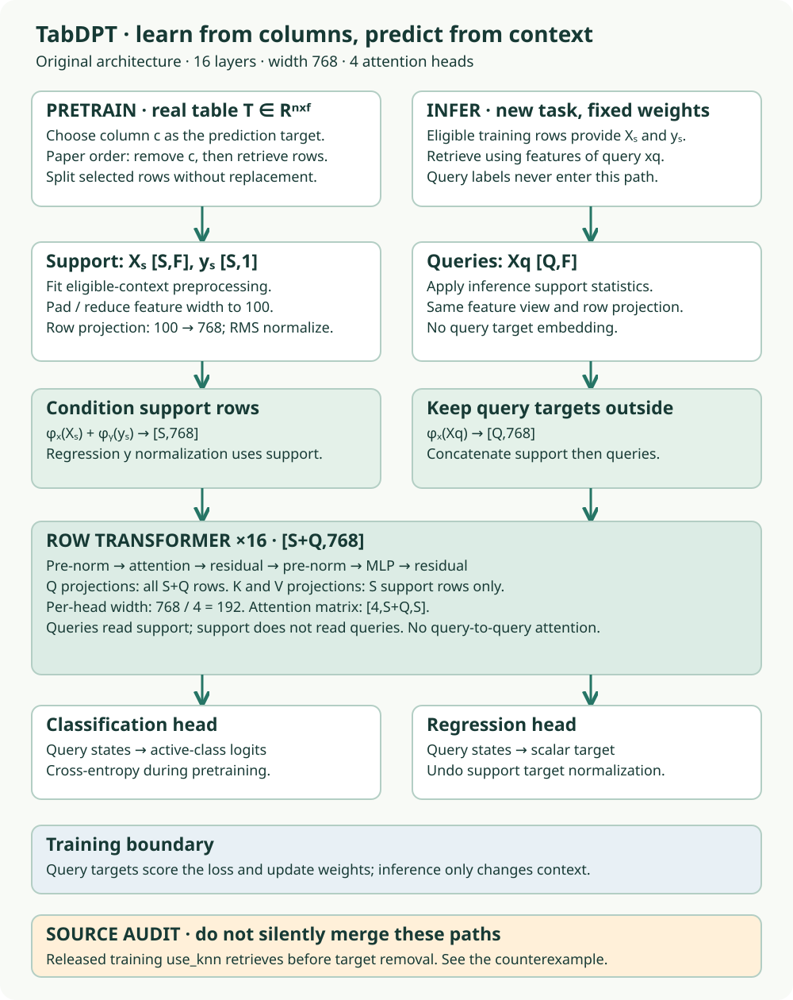

Research bridge · B05 · core
TabDPT: turn a real table into prediction episodes¶
Your win: construct an episode whose retrieval cannot see its target, trace it through TabDPT, and defend what a dataset-overlap audit actually proves. Read the core in 25–35 minutes; complete the notebook and written defense in a separate session.
B04 compressed rows before dataset attention; B04a changed the attention operator. Both leave a question: which rows should enter context, and where do training tasks come from? TabDPT combines real-table column prediction with neighborhoods. For our relational mission, it offers a strong flat-table modeling route, but similarity search alone does not enforce entity cutoffs, legal joins or feature arrival times.
Student notebook · Executed solution · Reference · Reproduction contract
See the idea · then trace the details
TabDPT: a real table becomes a prediction task
The chosen target column changes what retrieval is permitted to see.
1Choose a target column
Real table → features and prediction target
Construct episodes from real tables by choosing a target. Prevent that target from entering the features used to retrieve neighbors.
2Retrieve a local episode
Feature-only neighborhood → support + queries
The neighborhood supplies labeled context. Retrieval is an information-selection step, not an exemption from leakage rules.
3Learn across episodes
Shared transformer → query predictions
Train on episodes and use context for prediction. The lesson separates released inference evidence from historical pretraining identity.
Pause and predict: What happens if neighbor retrieval includes the very column being predicted?
The retrieval can depend on the answer, leaking target information even if that column is later masked inside the transformer.
Answer: The retrieval can depend on the answer, leaking target information even if that column is later masked inside the transformer.
1. Retrieve first, then read¶
Without reopening notes: what changes during in-context learning if weights stay fixed? What is the difference between a support label and a query label? Why can a different context change a prediction? Prerequisites are row/column indexing, standardization, nearest neighbors and the attention Q/K/V roles. Revisit B03 for the frozen-model contract. Ask the agent for a worked distance calculation if needed.
An episode is a small prediction task: labeled support rows plus queries to predict. An unlabeled table still contains observed columns. Temporarily designate one as the target, predict its query values from the other columns, and use the observed values to compute a training loss. The target is hidden from model inputs, not absent from the training system. Varying the chosen column and feature subset creates many tasks from the same table; it does not create independent datasets. TabDPT §3.2.
2. Remove the target before choosing neighbors¶
Consider six rows with one feature x and a candidate target y. We want a three-row neighborhood around row0. If the distance includes y, even a later deletion of y cannot erase its effect on which rows were chosen. The selection itself carries information.
Predict: with x fixed, should changing only y change the chosen row IDs? Try both orders below. Green rows enter the neighborhood; the anchor is included in this pretraining illustration. A subsequent disjoint support/query split is a separate operation.
Choose neighbors before seeing the answer
| Row ID | Feature x | Target y | d² |
|---|---|---|---|
| 0 · anchor | 0 | 0 | 0.0000 |
| 1 | 0.1 | 100 | 0.0201 |
| 2 | 0.2 | 0 | 0.0805 |
| 3 | 0.3 | 100 | 0.1812 |
| 4 | 1 | 0 | 2.0134 |
| 5 | 2 | 100 | 8.0537 |
Pretraining illustration: the anchor belongs to the candidate population. Standard deviations are fit to that population. Downstream inference fits statistics to eligible support instead.
Work one distance: without y, the raw squared distance from row0 to row2 is (0.2−0)² = 0.04. Standardizing x divides every squared distance by the same positive variance, preserving this one-feature order. Adding standardized y introduces another distance term and can change the ranking. In multiple features, support-fitted scaling changes their relative contributions.
Paper Algorithm1 selects the target, removes it, retrieves a neighborhood, then splits its rows into support and query. The notebook implements that order. At downstream inference, candidates come from eligible training rows and queries retrieve from them. These are different uses of retrieval. Algorithm1 and §3.4.
Where must the target go?
Before constructing a target-safe retrieval index:
3. Follow the tensors through the model¶


For S=24 support rows, Q=8 queries and F=12 remaining features, the table has shape [32,12]. Width handling supplies100 input slots per row. A shared linear encoder produces [32,768] row vectors, followed by RMS normalization in the original release. Support rows receive an additional embedding of their targets. Query rows do not.
In each of16 blocks, all 32 rows form attention queries, while only24 support rows form keys and values. Four heads give192 coordinates per head and score matrices [4,32,24]. The feed-forward sublayer maps768→1536→768. A task-specific head reads the final query vectors. Support rows cannot attend to query rows, and query rows cannot attend to each other through this attention path. Complete original model source.
Trace CHECK: which slice constructs K and V? Find h[:, :eval_pos] in the notebook's complete source appendix. Explain why using all rows there would change the information contract. The original model normalizes features across the whole episode during training but uses support statistics at inference; attention isolation alone does not prove isolation of every preprocessing operation. Its regression output is restored to support-target units.
Pretraining updates model weights from query losses. Frozen inference uses support labels as inputs without gradient updates. Our four-neighbor mean readout exercises episode construction only; it is not a small trained TabDPT.
4. A paper and its release can disagree¶
The released training code builds an index from all standardized columns. Its use_knn method retrieves first and deletes the randomly selected target afterward. This differs from the paper-order algorithm above. We preserve the release, expose the discrepancy, and keep the course implementation separate. Pinned training source.
The executed probe extracts the unchanged released method and supplies an exact L2 index oracle in place of FAISS. Changing only target values moves its selected IDs from [0,2,4] to [0,1,3]; target-safe selection stays [0,1,2] both times. This confirms a dependency in this sampler under the constructed input. It does not establish which private training run produced a published checkpoint or how much a benchmark score changes. Probe code · Recorded result.
TODO: implement target removal and support-only retrieval. CHECK: reverse the target column and require identical selected IDs; add a second query with extreme features and require the first query's neighbors to stay fixed. EXIT: explain why deleting y after selection is too late, without claiming that every target-dependent pretraining sampler leaks downstream test labels.
5. Real data requires an overlap audit¶
A different dataset ID or file hash cannot rule out a renamed, reordered or derived copy. The paper's contamination procedure compares names, hashes, dimensions, target/feature statistics and suspicious pairs manually. Those are complementary checks, not a single universal certificate. Appendix B.1.
Our complete declared-ID check covers123 training IDs against72 classification test IDs: zero exact intersections, and banknote1462 is absent from training IDs. We did not download and compare every table's contents; independence remains NOT_ESTABLISHED. The notebook asks you to distinguish exact overlap, related datasets and insufficient evidence. For a relational dataset, extend the audit to entity identity and time windows; a future snapshot of the same entities can be related despite changed bytes.
6. Inspect all the measured course evidence¶
The frozen course experiment uses all178 Wine feature rows and creates18 episodes: three target columns × three seeds × two neighborhood sizes. Each has8 queries; a four-neighbor support-target mean supplies144 predictions. An independent scalar implementation verifies every selected neighbor, query identity, target and prediction. All18 target-reversal interventions leave selection unchanged. Protocol · Complete audit.
| Target column | Seed | Episode rows | Queries | MSE (target units²) |
|---|---|---|---|---|
| Alcohol | 0 | 32 | 8 | 0.231489 |
| Alcohol | 0 | 96 | 8 | 0.348168 |
| Alcohol | 1 | 32 | 8 | 0.137604 |
| Alcohol | 1 | 96 | 8 | 0.276418 |
| Alcohol | 2 | 32 | 8 | 0.160409 |
| Alcohol | 2 | 96 | 8 | 0.062337 |
| Flavanoids | 0 | 32 | 8 | 0.123504 |
| Flavanoids | 0 | 96 | 8 | 0.161327 |
| Flavanoids | 1 | 32 | 8 | 0.085609 |
| Flavanoids | 1 | 96 | 8 | 0.075273 |
| Flavanoids | 2 | 32 | 8 | 0.089549 |
| Flavanoids | 2 | 96 | 8 | 0.085677 |
| Proline | 0 | 32 | 8 | 14240.625000 |
| Proline | 0 | 96 | 8 | 32653.609375 |
| Proline | 1 | 32 | 8 | 65699.875000 |
| Proline | 1 | 96 | 8 | 22968.687500 |
| Proline | 2 | 32 | 8 | 39331.640625 |
| Proline | 2 | 96 | 8 | 18290.976562 |
These MSEs have target-specific units. A bigger neighborhood also changes which rows become queries here. Do not pool MSE across targets or interpret these rows as a paired context-size ablation. To study support size causally, fix the target, query IDs, eligible candidate population, checkpoint and preprocessing policy before changing support. Full TabDPT training and inference remain separate evidence.
7. Original TabDPT, Turbo and v1.3 are separate artifacts¶
The original recovered checkpoint has4 heads. The later v1.1 header has8 heads; the paper-era evaluator automatically loads that later file. A version name and a matching hidden width do not establish historical identity. The original checkpoint download matches its published Git LFS hash, which proves artifact identity only. Version ledger.
Turbo changes the recipe more substantially: longer-context training, thinking rows, per-layer target conditioning and reusable context computation. In its architecture, target embeddings enter attention values rather than simply being added to row embeddings. Its described inference uses one shared context without per-query kNN retrieval, removing repeated neighborhood processing. Its reported speedups must be evaluated with its complete fitting, context and inference settings. The September v1.3 release is another checkpoint update, not another name for the original paper. Turbo §3 · Pinned release history. Neither newer model is executed here.
Banknote's entire dataset is smaller than2,048 rows. Even a successful selected run would test a frozen checkpoint evaluation, not prove the benefit of neighbor pruning. The separate episode lab supplies the active-retrieval exercise.
8. Defend the information path¶
In the notebook, complete three live functions: feature_view, neighbors and overlap_status. The checks call your functions; the written defense remains your work. Submit: (1) a hand distance trace, (2) support/query shapes and attention boundaries, (3) a renamed-dataset audit, and (4) the narrowest justified claim for the released sampler probe. Author checks leave PENDING_WRITTEN_DEFENSE.
After completion, revisit the target intervention after 1 day, reconstruct the architecture after 7 days, and audit a new table pair after 30 days. Ask the agent follow-up questions or request a hint before looking at the solution. Start primary reading with TabDPT §3 and Appendix B.1.
Next: B06: Mitra asks how the distribution of pretraining tasks changes the learned predictor. Carry the distinction between a task generator, learned weights and inference context into that comparison.